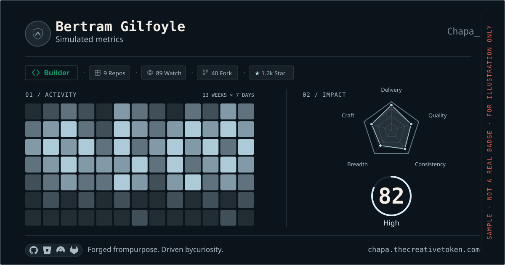

GOOD WORK.
LEAVES A
MARK_
developer identity, decoded.
your work is more than a commit count.
make something. leave your signature.
OF MAKING THINGS HAPPEN

/inspect badge.svg OPEN THE BADGE LAB ↗A BIGGER PICTURE.↓
CODE IS PERSONAL.
YOUR PROFILE
SHOULD BE, TOO.
Some developers ship relentlessly. Some make everyone’s code better. Some go deep. Others connect the dots.
Chapa reads the patterns in your work and gives them a shape. A living profile of how you build, not just how often you commit.
See what goes into your profileWHAT’S YOUR
SIGNATURE?
Different strengths. Distinct identities.
Pick an archetype to explore a sample.
PROFILE / 01
THE BUILDER.
You turn ideas into things people can use. Pull requests merged. Problems solved. Momentum made visible.
Meet the Builder EXAMPLE PROFILE · NOT A REAL DEVELOPER’S SCORESyour_work
.explained()
Four core dimensions, plus optional AI Craft. Built from the last 365 days of activity across your connected platforms.
Read the methodology01 Delivery
The work you move forward. From contributions to merged pull requests, see how you turn intent into delivery.
02 Quality
The care you bring to the code: thoughtful changes, review participation, and the practices behind maintainable work.
03 Consistency
Your rhythm over time. Chapa looks at active weeks across the year, so the picture goes beyond a single busy day.
04 Breadth
The range of your contributions across projects and technologies. See the ground your work covers.
05 Craft OPTIONAL
Your approach to AI coding tools, based on insights you choose to import. An additional dimension alongside your development activity.
SMALL FORMAT.
BIG IDENTITY.
A living SVG for your README, portfolio, or personal site. Your work evolves. Your badge follows.
hello, agent_
Explore your profile, co-design a badge, and check its verification with WebMCP. Your agent can help shape it. You decide when to save.
Explore the agent toolsget_impact_profileapply_badge_styleverify_badgeYOUR IDENTITY. YOUR FINAL CALL.
YOUR WORK.
WITH RECEIPTS.
Badges marked “Verified metrics” carry a cryptographic seal. Anyone can check that the scores haven’t been tampered with.
Verify a badgeLEAVE
YOUR MARK↗
Get your Chapa DRIVEN BY CURIOSITY.chapa_